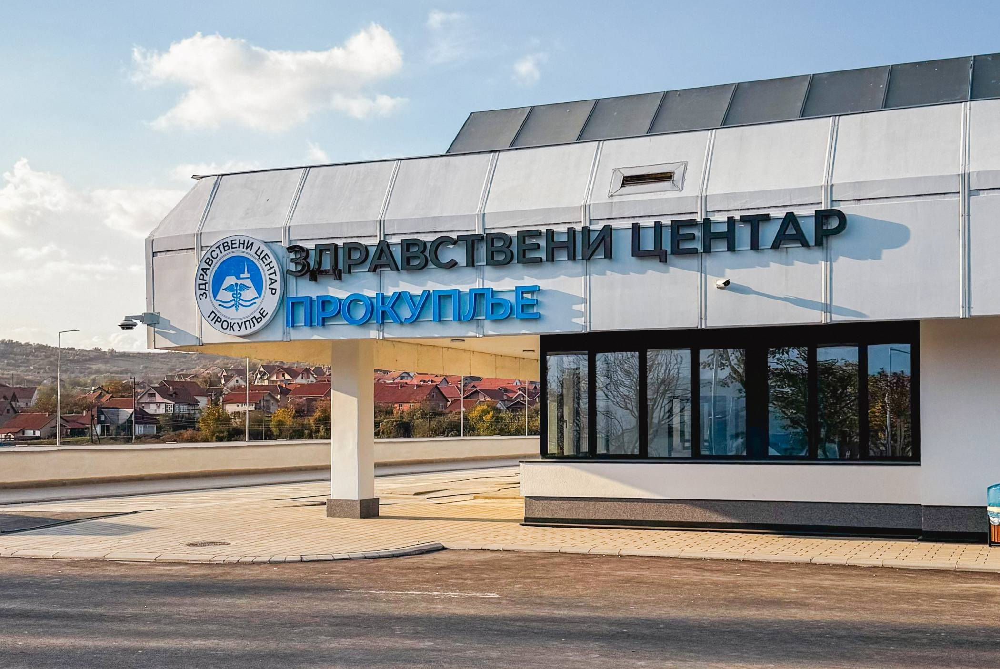

IP telefonija
Nova IP telefonska centrala Alcatel-Lucent OXO Connect za interne i eksterne komunikacije ustanove.

Nova IP telefonska centrala, aktivna mrežna infrastruktura visoke pouzdanosti i kompletna Wi-Fi pokrivenost za zdravstvenu ustanovu u kojoj su stabilnost i dostupnost sistema od presudnog značaja.

Zdravstvenom centru Prokuplje bila je potrebna nova IP telefonska centrala, aktivna mreža visoke pouzdanosti i propusnosti kojom se upravlja kroz jedinstvenu softversku platformu, kao i potpuna Wi-Fi pokrivenost objekta.
TRS je isporučio kompletnu telefonsku, mrežnu i bežičnu infrastrukturu ustanove, projektovanu za okruženje u kojem sistemi moraju biti dostupni bez prekida, 24 časa dnevno.
Kompletna komunikaciona infrastruktura realizovana je na Alcatel-Lucent Enterprise opremi, kao jedinstvena celina.
Nova IP telefonska centrala Alcatel-Lucent OXO Connect za interne i eksterne komunikacije ustanove.
Šest core svičeva OS6900, više od 80 pristupnih svičeva serije OS6560 i industrijski svičevi OS6465H, pod jedinstvenom platformom za upravljanje.
Oko 100 pristupnih tačaka serije OAW-AP13xx za potpunu bežičnu pokrivenost svih prostora ustanove.
Telefonija, mreža i Wi-Fi implementirani su kao jedinstvena infrastruktura ustanove.

Implementirano rešenje obezbeđuje pouzdanu telefoniju, stabilnu mrežu kojom se upravlja centralizovano i potpunu Wi-Fi pokrivenost, čime ustanova dobija komunikacionu osnovu spremnu za svakodnevni rad i dalji razvoj servisa.